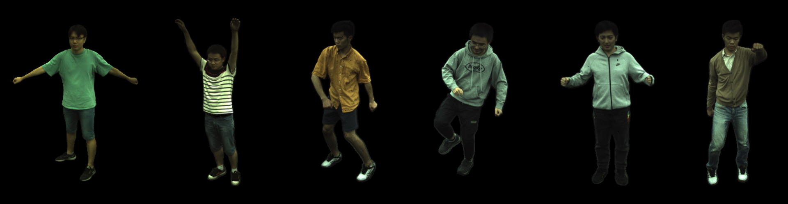

We propose a new method for reconstructing controllable implicit 3D human models from sparse multiview RGB videos. Our method defines the neural scene representation on the mesh surface points and signed distances from the surface of a human body mesh. We identify an indistinguishability issue that arises when a point in 3D space is mapped to its nearest surface point on a mesh for learning surface-aligned neural scene representation. To address this issue, we propose projecting a point onto a mesh surface using a barycentric interpolation with modified vertex normals. Experiments with the ZJU-MoCap and Human3.6M datasets show that our approach achieves a higher quality in a novel-view and novel-pose synthesis than existing methods. We also demonstrate that our method easily supports the control of body shape and clothes.
Given a query point \( \mathbf{x} \in \mathbb{R}^3 \), we use the proposed dispersed projection to project it onto a point \( \mathbf{s} \in \mathbb{R}^3 \) on the mesh surface to obtain a surface-aligned representation \( \mathcal{X} \). The representation \( \mathcal{X} \) and the view direction \( \mathbf{d}^* \) are then input into the NeRF to compute the color \( \mathbf{c} \) and density \( \sigma \) of the query point \( \mathbf{x} \).
By controlling the shape principal components of the body mesh, we can obtain rendering results of different body shapes.
Change 1st (upper) and 2nd (bottom) principal component of SMPL from -4 to +4.
Our method can replace trained NeRFs according to the different surface areas to achieve a similar effect of “changing clothes”.
Source appearance.
Subject changes into different combinations of tops and bottoms.
@inproceedings{xu2022sanerf,
author = {Xu, Tianhan and Fujita, Yasuhiro and Matsumoto, Eiichi},
title = {Surface-Aligned Neural Radiance Fields for Controllable 3D Human Synthesis},
booktitle = {CVPR},
year = {2022},
}